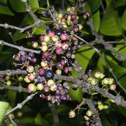
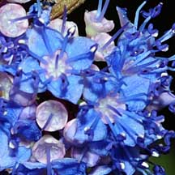
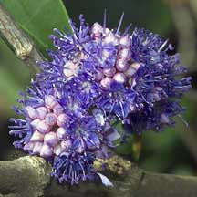
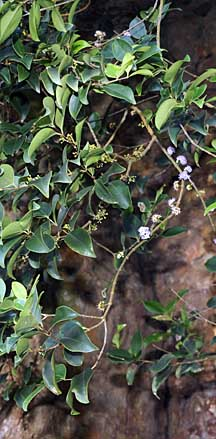
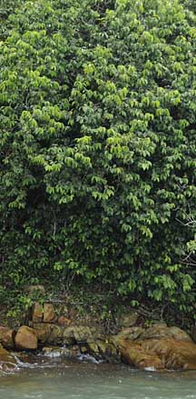
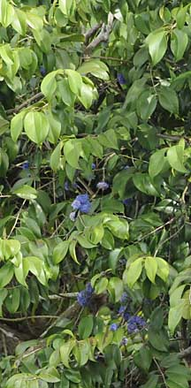
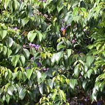
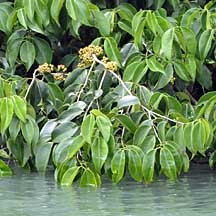

|
|
| plants text index | photo index |
| coastal plants |
| Delek
air Memecylon edule Family Melastomaceae updated Oct 2016 Where seen? This tree with beautiful blue flowers is rare. There are several on the rocky cliffsides of Chek Jawa, Pulau Ubin and Labrador, as well as some at our offshore islands including Sentosa Tg Rimau, Lazarus Island, Pulau Jong and Big Sisters Island. Elsewhere, it is common on sandy and rocky shores. The Malay name for the Memecylon trees is 'Nipis Kulit' which means 'thin skin' refering to their thin bark. Features: A small tree (3-7m tall). Bark greyish brown, finely ridged and very thin. Leaves eye-shaped (3-7cm) so leathery that the veins are hard to see, does not produce latex when broken. Young leaves are glossy red. Flowers tiny (0.5cm) many in ball-shaped cluster, calyx pink with bright blue petals and stamens. The flowers are said to be very fragrant. Fruit globular (1cm), green ripening to pinkish then yellow and black. Human uses: According to Burkill, the wood is very hard and heavy and good for house posts, rafters. It is an excellent fuel and makes good charcoal. After cutting, the stump coppices well. The fruit is said to be 'just edible'. In India, the leaves were used for a yellow dye. The leaves are part of a 'decoction of considerable reputation' in India for the treatment of gonorrhoea. The bark is used to poultice bruises. Status and threats: It is listed as 'Endangered' on the Red List of threatened plants of Singapore. |
|
 Chek Jawa, Oct 04 |
 Chek Jawa, Jul 08 |
 Chek Jawa, Apr 07 |
|
 Sentosa, Jun 10 |
 Chek Jawa, Oct 09 |
 Chek Jawa, Dec 09 |
 Chek Jawa, Jun 02 |
 Leaves dip in seawater at high tide. Chek Jawa, Oct 09 |
| Delek air on Singapore shores |
On wildsingapore
flickr
|
|
Links
References
|